Machine Learning 1
Clase 3: Preprocesamiento de Datos, Limpieza, Imputación, Normalización, Outliers y PCA
Universidad Nacional de Asunción
Facultad de Ingeniería
Semestre Séptimo - Ingeniería Electrónica
1. Importancia del Preprocesamiento de Datos
Principios de Calidad en la Ingeniería de Datos
Un modelo probabilístico o estadístico requiere datos limpios, consistentes y representativos. El preprocesamiento riguroso elimina el ruido, homogeiniza escalas y asegura la convergencia estable de los algoritmos de Machine Learning.
Fases del Pipeline de Datos
- Adquisición e Inspección: Verificación de fuentes de datos.
- Limpieza de Ausencias: Eliminación directa (`dropna`) o Imputación.
- Normalización / Escalado: Homogeneización de escalas numéricas.
- Filtro de Outliers: Criterios físicos y modelos de anomalía.
- Reducción de Dimensionalidad: Compresión óptima vía PCA.
Prevención de Data Leakage
REGLA DE ORO: Realizar la partición en Train y Validation/Test antes de ajustar imputadores, escaladores o detectores de anomalías. Ajustar siempre SOLO en Train.
Fuentes de Datos y Matriz de Valores Nulos
Datasets de Estudio (Semana 3)
- Titanic Open Dataset: Tabular ($891$ filas $\times 12$ cols). Presencia de nulos en
Age,Cabin,Embarked. - Dataset Personas (ZIP): Registro civil masivo (~1 GB CSV en ZIP) para estimación de edad según Cédula.
- Olivetti Real Faces: Imágenes ($64 \times 64$ px, $D=4096$) con anomalías ópticas inyectadas.
Formulaciones de Ausencia
- MCAR: $$P(M | Y_{obs}, Y_{mis}) = P(M)$$
- MAR: $$P(M | Y_{obs}, Y_{mis}) = P(M | Y_{obs})$$
- MNAR: $$P(M | Y_{obs}, Y_{mis}) = P(M | Y_{obs}, Y_{mis})$$
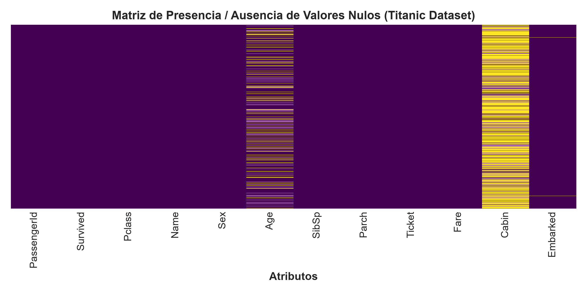
2. Limpieza Tabular: Eliminación Directa (`dropna`) vs. Imputación
Eliminación Directa (`dropna`)
- Por Filas (`subset`): Recomendado cuando los nulos representan $< 5\%$ de los datos en atributos clave.
- Por Columnas (`thresh`): Indicado cuando la variable pierde $> 70\%$ de datos (ej.
Cabinen Titanic).
Imputación Estructurada (`KNNImputer`)
Calcula el promedio ponderado de los $k$ vecinos más cercanos utilizando la distancia Euclídea ajustada:
$$d(x, p) = \sqrt{\frac{m}{m_{obs}} \sum_{k \in Obs} w_k (x_k - p_k)^2}$$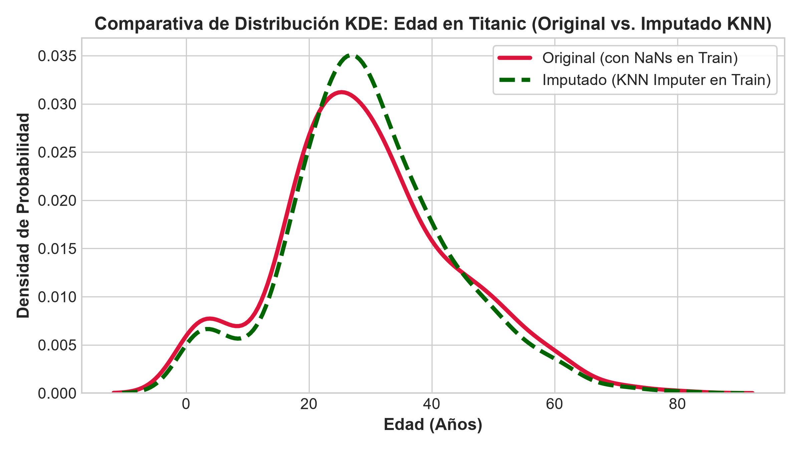
3. Normalización y Escalado de Características
StandardScaler (Z-Score)
$$z = \frac{x - \mu}{\sigma}$$Media $\mu = 0$ y desviación estándar $\sigma = 1$. Ideal para PCA.
MinMaxScaler ([0, 1])
$$x_{norm} = \frac{x - x_{min}}{x_{max} - x_{min}}$$Acota los datos en el rango $[0, 1]$. Sensible a outliers.
RobustScaler (Median / IQR)
$$x_{rob} = \frac{x - Med(X)}{IQR(X)} = \frac{x - P_{50}}{P_{75} - P_{25}}$$Robusto a la influencia de valores atípicos severos.
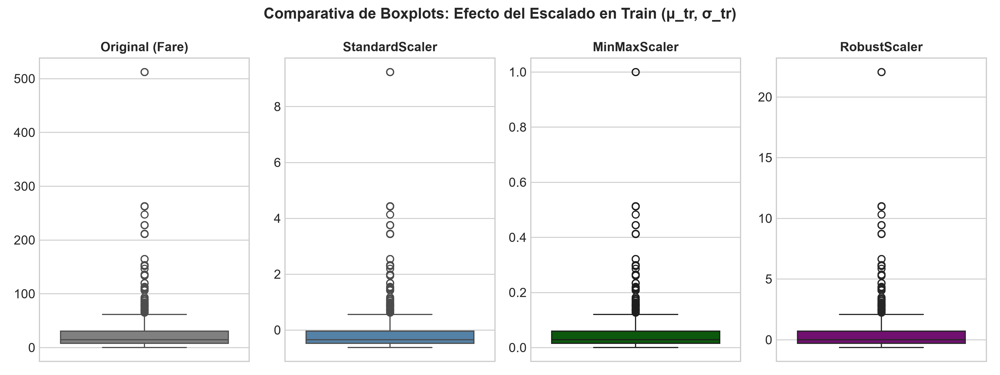
Comparativa de Normalización en la Tarifa (`Fare`)
Evaluación visual del impacto del escalado sobre la distribución de la tarifa (Fare):
Conclusiones Clave
- Original: Distribución fuertemente sesgada a la derecha.
- StandardScaler: Centra la media en $0.0$ preservando la curva.
- MinMaxScaler: Comprime datos por la tarifa extrema de $\$512$.
- RobustScaler: Mantiene la escala del $50\%$ central alrededor de $1.0$.
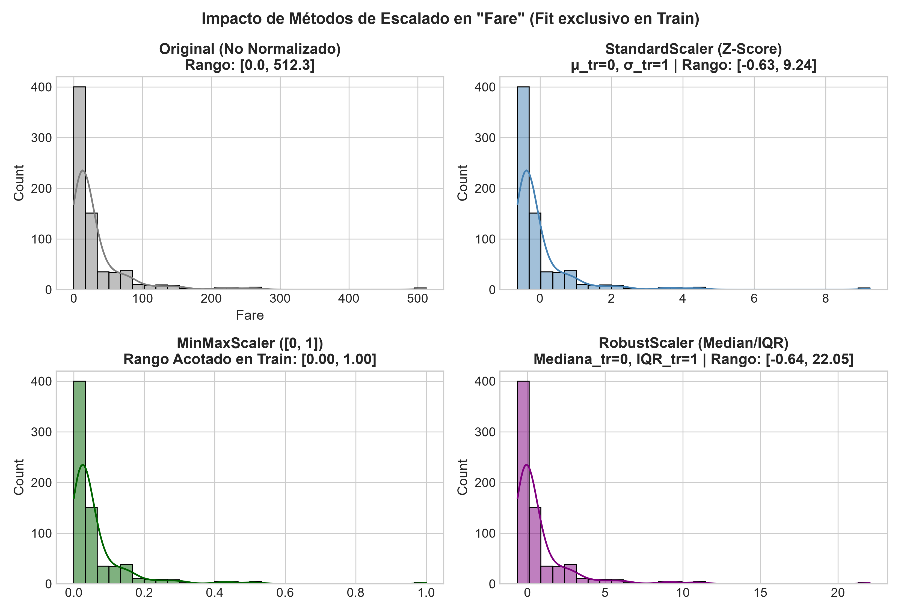
4. Detección de Outliers en Datos Tabulares
Criterio IQR Univariado (Tukey)
$$IQR = Q_3 - Q_1$$ $$\text{Límite Superior} = Q_3 + 1.5 \times IQR$$Detecta valores fuera de la valla intercuartílica.
Isolation Forest Multivariado
$$s(x, n) = 2^{-\frac{E(h(x))}{c(n)}}$$Aisla observaciones seleccionando cortes aleatorios. Las anomalías requieren menor profundidad $h(x)$.
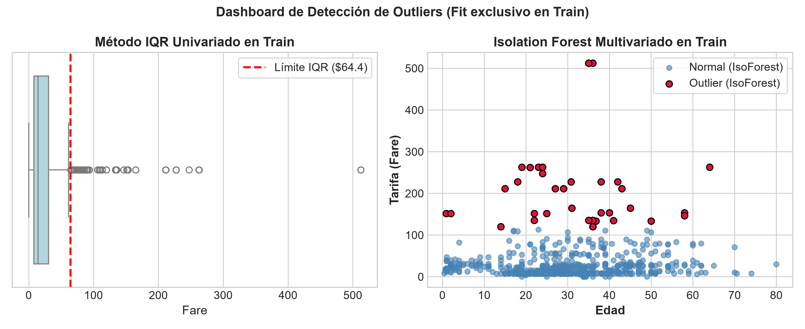
Caso Práctico Real: Dataset Personas (`personas_202607262153.zip`)
Inferencia de Edad basada en el Número de Cédula de Identidad (CI)
En registros civiles, las Cédulas de Identidad son asignadas de forma secuencial en el tiempo. Por ello, existe una fuerte correlación monótona entre el número de Cédula y el Año de Nacimiento.
Limpieza de Datos Masivos
- Lectura automatizada desde archivo ZIP (~1 GB CSV).
- Eliminación directa (
dropna) de nulos. - Conversión DateTime con
utc=Truepara evitar errores de zonas horarias mixtas. - Filtrado de años corruptos out-of-range ($1900 \le \text{Año} \le 2026$).
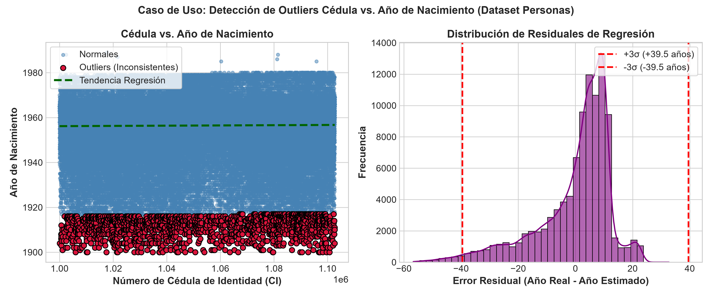
Análisis Z-Score de Residuales y Normalidad en Personas
Modelo de Regresión Lineal $\text{Año Estimado} = f(\text{Cédula})$ y evaluación de residuales $Z > 3\sigma$:
Identificación de Outliers
El análisis de residuales $e_i = y_i - \hat{y}_i$ con umbral de $3$ desviaciones estándar ($3\sigma$) aísla automáticamente las personas con cédulas o años corruptos antes de entrenar el estimador de edad.
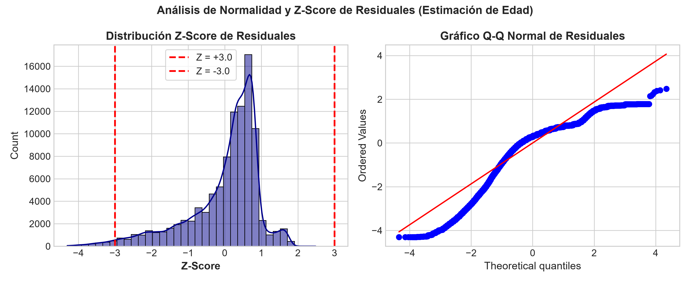
5. Análisis y Metadatos Físicos de Imágenes Reales
Evaluación de calidad en el dataset Olivetti Real Faces ($64 \times 64$ píxeles):
Formulaciones de Metadatos Físicos
- Brillo Medio ($\mu_I$): $$\mu_I = \frac{1}{H \times W} \sum_{x=1}^W \sum_{y=1}^H I(x,y)$$
- Contraste ($\sigma_I$): $$\sigma_I = \sqrt{\frac{1}{H \times W} \sum (I(x,y) - \mu_I)^2}$$
- Nitidez / Blur Score: $$\text{Blur Score} = Var(\nabla^2 I)$$ varianza de la imagen filtrada con el operador Laplaciano $\nabla^2 I$.

6. Reducción de Dimensionalidad con PCA
Análisis de Componentes Principales (Principal Component Analysis)
En datos de alta dimensionalidad ($64 \times 64 = 4096$ píxeles), PCA proyecta los datos al espacio latente de $K=15$ dimensiones mediante una Matriz Base de Autorrostros (Eigenfaces) $V_K \in \mathbb{R}^{K \times D}$.
Matriz Base de Componentes ($V_K$)
$$\Sigma v_k = \lambda_k v_k$$ $$V_K = [v_1, v_2, \dots, v_K]^T \in \mathbb{R}^{15 \times 4096}$$Matriz de $15$ vectores ortogonales de máxima varianza aprendidos de caras normales de Train.
Error MSE de Reconstrucción
$$\hat{X} = Z V_K \in \mathbb{R}^{N \times D}$$ $$e_i = \frac{1}{D} \sum_{j=1}^D (x_{scaled, i, j} - \hat{x}_{i, j})^2$$Un error MSE alto indica la ausencia de soporte de la imagen en la matriz base (marcador de anomalía).
PCA: Análisis de Varianza Explicada
Evaluación de la retención de varianza por autorrostro:
Varianza Explicada Proporcional ($VR_k$)
$$VR_k = \frac{\lambda_k}{\sum_{j=1}^D \lambda_j}$$- Los primeros componentes capturan la estructura facial global e iluminación principal.
- Con solo $K=15$ componentes se retiene una alta proporción de la varianza total permitiendo una compresión eficiente.
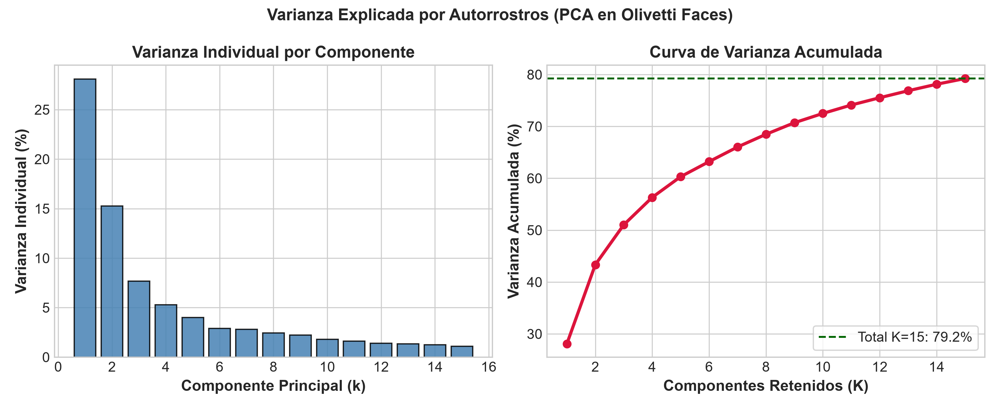
Matriz Base de Componentes (Autorrostros / Eigenfaces)
Visualización de la Matriz Base $V_K \in \mathbb{R}^{15 \times 4096}$ entrenada en Train:
Interpretación Física
- Componente #1: Iluminación global y silueta facial media.
- Componentes #2-#5: Posición de ojos, nariz y contorno de mejillas.
- Componentes superiores: Rasgos de alta frecuencia y sombras específicas.
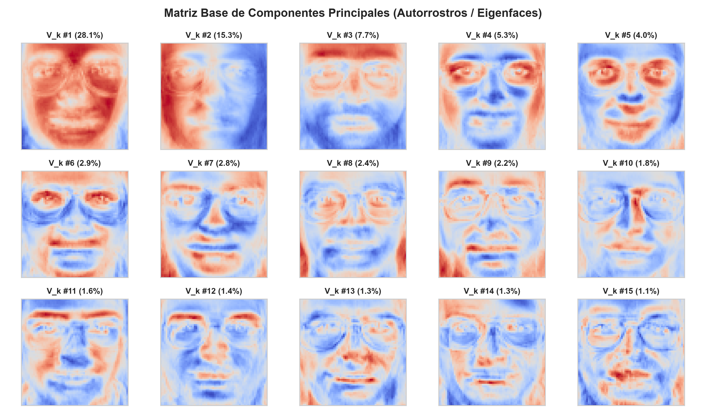
Demostración Intuitiva: Reconstrucción PCA y Mapa de Error
Rostros Normales vs. Anómalos
Imágenes normales reconstruyen con precisión. Imágenes anómalas generan diferencias de alta intensidad $|X - \hat{X}|$.
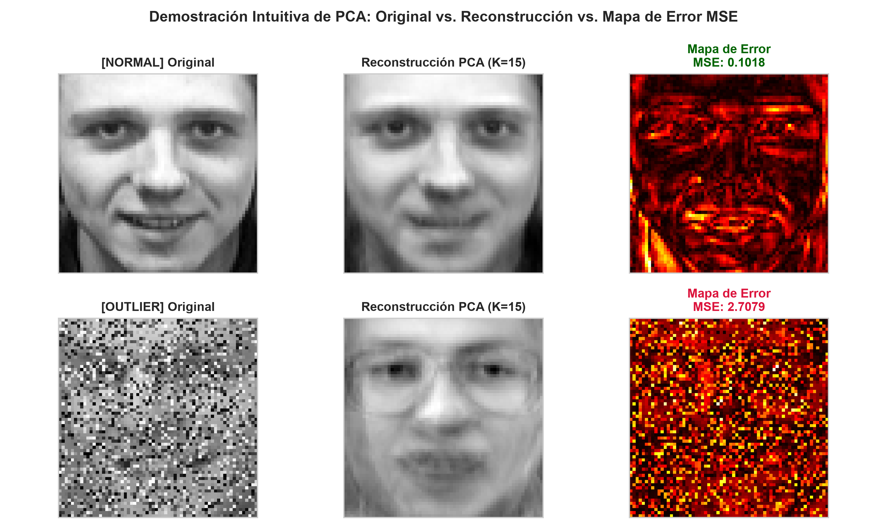
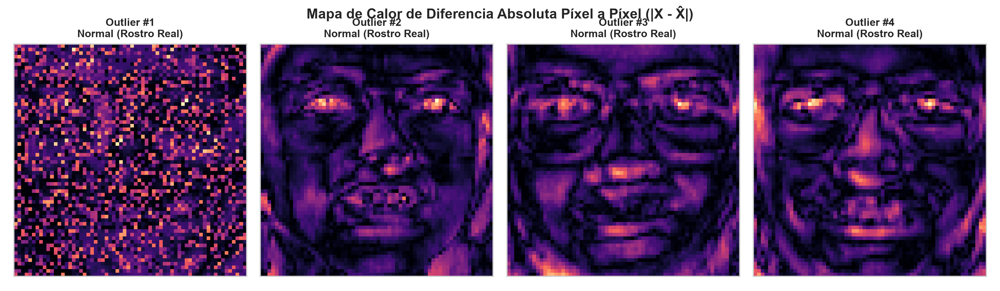
Verificación Cuantitativa en Conjunto de Test
Evaluación cuantitativa del detector de anomalías PCA:
Métricas de Evaluación
$$Precision = \frac{TP}{TP + FP}, \quad Recall = \frac{TP}{TP + FN}$$ $$F_1 = 2 \cdot \frac{Precision \cdot Recall}{Precision + Recall}$$Recuadros verdes señalan predicciones normales verificadas y recuadros rojos señalan anomalías identificadas.
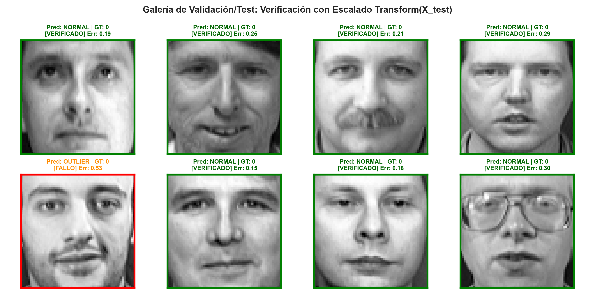
7. Encapsulamiento en Pipeline de Producción
ColumnTransformer y Pipeline Modular
En entornos de despliegue real, la imputación, la normalización estandarizada (StandardScaler) y la codificación categórica (OneHotEncoder) se encapsulan para garantizar reproducibilidad sin Data Leakage.
Pipeline([('imputer', KNNImputer()), ('scaler', StandardScaler())])
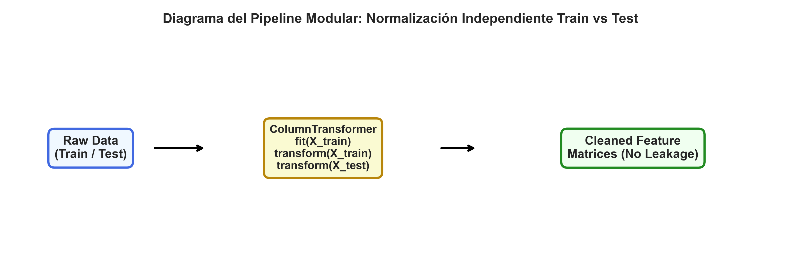
Resumen Pedagógico - Clase 3
- ✔ Ausencia de Datos: Distinguir mecanismos $MCAR, MAR, MNAR$ para aplicar
dropnaoKNNImputer. - ✔ Normalización: Seleccionar entre
StandardScaler,MinMaxScaleryRobustScalersegún la distribución y presencia de outliers. - ✔ Prevención de Data Leakage: Entrenar escaladores, imputadores y modelos de anomalía únicamente en Train.
- ✔ Detección de Outliers: Utilizar criterios IQR, Isolation Forest y análisis de residuales $Z > 3\sigma$ en relaciones reales (Cédula vs. Edad).
- ✔ PCA y Matriz Base: Explicar autorrostros ($V_K$), varianza explicada y el error MSE de reconstrucción para la detección de anomalías.
¡Muchas Gracias!
Universidad Nacional de Asunción - Facultad de Ingeniería (Clase 3)